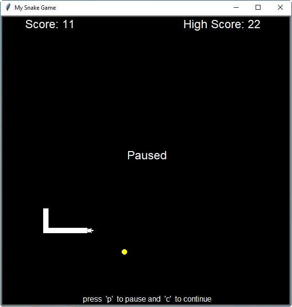

Building the Classic Snake Game in Python Using the Turtle Library
Join us on a nostalgic journey as we recreate the beloved Snake Game in Python using the Turtle library. Discover how we overcame challenges such as positioning the snake's body and food spawning. Download the game for free and explore the source code to learn more.
Few games have been loved as much as the humble Snake Game, back in the late '90s when there were very few things to do on Symbian phones to pass the time. Personally, I've spent countless hours lying on my dad's couch, trying to make the Snake cover the 1.5-inch (!) screen of my Nokia 3310 and reaching the max score, only to start all over again.
With the same nostalgia, I started the Python exercise to create the game on a computer. Until I hit a snag. The game had to be built using the Turtle library, which is really mysterious and not user-friendly at all. Additionally, I had to use classes instead of simple functions to run the program.
It's amazing how even the most basic games can offer a plethora of challenges. This game, in particular, is no exception. Let's delve into the task of enlarging the snake every time it consumes food. We should append a square to the end of snake's body, but where exactly is this position? Besides, we must ensure that the recently spawned food doesn't emerge on the snake's body, as it would remain obscured until the snake moves and exposes it. This problem became a significant source of frustration, particularly as the snake grew longer and the food remained concealed for several seconds. However, after persisting for a week, trying various solutions, and even uttering a few colourful words, we eventually figured out how to overcome this challenge.
At the end, original MAME sounds were added, as well as a high score feature and the ability to pause the game, among other things, in order to make it as close as possible to what we all remember. The game is available for free download in here and the entire source code is available here. Like all exe files uploaded to this blog, it has been scanned on VirusTotal and some antivirus software has incorrectly identified it as a virus, resulting in false positives before it became available for download.